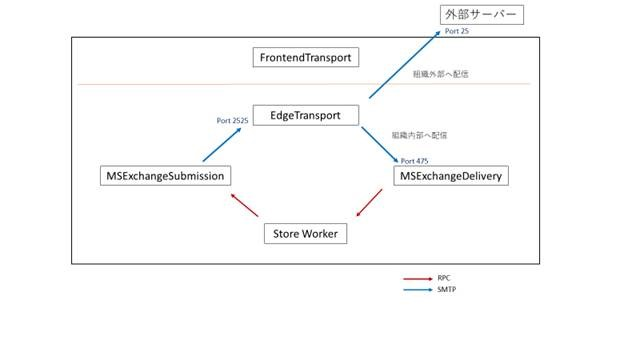
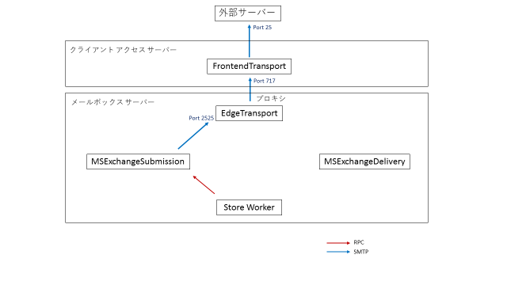
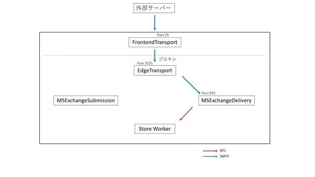
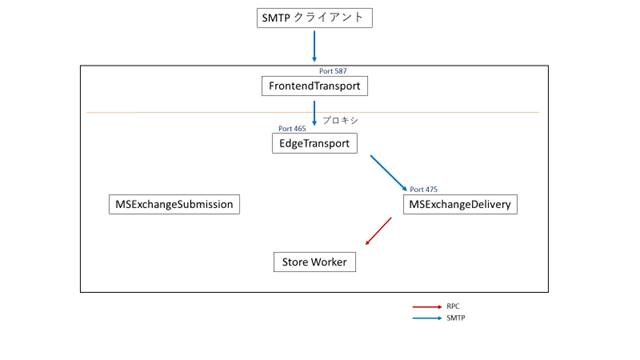
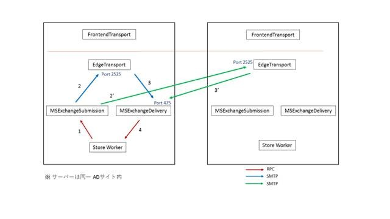
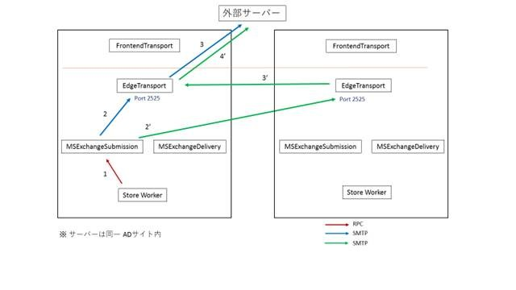
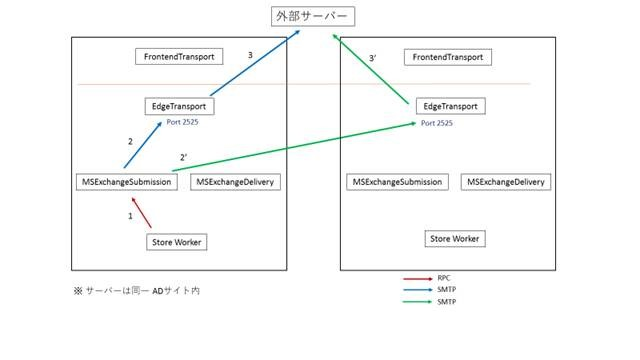
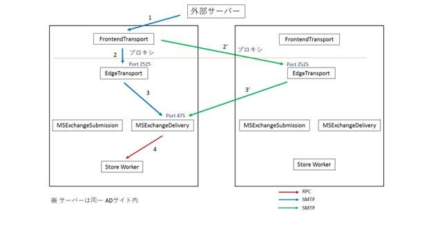

Exchange 2013 サーバー内でトランスポートに関わるサービス プロセスは MSExchangeSubmission、EdgeTransport、MSExchangeDelivery、MSExchangeFrontEndTransport となります。
- MSExchangeSubmission (Microsoft Exchange メールボックス トランスポート発信 サービス)
- EdgeTransport (Microsoft Exchange Transport サービスのワーカー プロセス)
- MSExchangeDelivery (Microsoft Exchange メールボックス トランスポート配信 サービス)
- MSExchangeFrontEndTransport (Microsoft Exchange フロントエンド トランスポート サービス)
この中で、メッセージ データを保持できるキューを持っているのは、EdgeTransport のみです。つまり、他のサービスはあくまで一時的に通るにすぎず、EdgeTransport 以外のサービスで「メッセージが留まる」ということはありません。
ここでは、各サービス間でのメッセージのフローについて紹介いたします。
まずサーバー 1 台環境での既定のメール フローを確認は以下のようになります。
以下は組織内から、組織内または外部へのメッセージの配信経路となります。
※ 送信コネクタの “FrontendProxyEnabled” は False のパターンです (既定)。

この時受信したメッセージの Received ヘッダーは以下のようになります。
Received ヘッダーを下から順番に確認すると、1 番下のヘッダーは MSExchangeSubmission が Store からメッセージを RPC (“with mapi“) で受け取ったことを示します (このヘッダーは MSExchangeSubmission が付与)。次の下から 2 番目のヘッダーは、EdgeTransport が MSExchangeSubmission から SMTP で受信したことを示します (EdgeTransport が付与)。そして最後に 1 番上のヘッダーは、MSExchangeDelivery が EdgeTransport から受信し (“via Mailbox Transport“)、Store へ配信されたことを示します (MSExchangeDelivery が付与)。
Received: from E2013-1-E.e.local (192.168.1.52) by E2013-1-E.e.local (192.168.1.52) with Microsoft SMTP Server (TLS) id 15.0.1210.3 via Mailbox Transport; Sat, 30 Jul 2016 03:16:52 +0900
Received: from E2013-1-E.e.local (192.168.1.52) by E2013-1-E.e.local (192.168.1.52) with Microsoft SMTP Server (TLS) id 15.0.1210.3; Sat, 30 Jul 2016 03:16:52 +0900
Received: from E2013-1-E.e.local ([192.168.1.52]) by E2013-1-E.e.local ([192.168.1.52]) with mapi id 15.00.1178.000; Sat, 30 Jul 2016 03:16:52 +0900
以下は送信コネクタで “FrontendProxyEnabled” を True に設定している場合です。
この場合、EdgeTransport から FrontendTransport (ポート 717) を介して外部へ配信されます

この時の Received ヘッダーは以下のようになります。
2 番目のヘッダーは EdgeTransport が MSExchangeSubmission から受信したことを示します。1 番上のヘッダーは、外部のサーバー POP-SMTP がクライアント アクセス サーバー (ここでは “E2013-1-B”) からメッセージを受信したことを示します。このようにクライアント アクセス サーバーの FrontendTransport を介して外部へ送信される場合には追加の Received ヘッダーは付与されません。
Received: from E2013-1-B.b.local ([192.168.1.31]) by POP-SMTP over TLS secured channel with Microsoft SMTPSVC(6.0.3790.3959); Sat, 30 Jul 2016 07:52:53 +0900
Received: from E2013-2-B.b.local (192.168.1.32) by E2013-2-B.b.local (192.168.1.32) with Microsoft SMTP Server (TLS) id 15.0.1076.9; Sat, 30 Jul 2016 07:52:09 +0900
Received: from E2013-2-B.b.local ([192.168.1.32]) by E2013-2-B.b.local ([192.168.1.32]) with mapi id 15.00.1076.000; Sat, 30 Jul 2016 07:51:59 +0900
次は外部からの匿名での受信時の経路となります。
※ 以下では外部サーバーからの受信をポート 25 で受信していますが、これは構成/クライアントに依存します。

この時の Received ヘッダーは以下のようになります。
下から順番に確認すると、1 番下のヘッダーは外部のサーバー (“POP-SMTP”) からのメッセージを FrontendTranport を介して (“via Frontend Transport“) 受け取ったことを示します (FrontendTranport が付与)。次のヘッダーは、EdgeTransport での受信を示し (EdgeTransport が付与)、最後の 1 番上のヘッダーは、MSExchangeDelivery への配信を示します (MSExchangeDelivery が付与)。
Received: from E2013-1-E.e.local (192.168.1.52) by E2013-1-E.e.local (192.168.1.52) with Microsoft SMTP Server (TLS) id 15.0.1210.3 via Mailbox Transport; Sat, 30 Jul 2016 06:53:17 +0900
Received: from E2013-1-E.e.local (192.168.1.52) by E2013-1-E.e.local (192.168.1.52) with Microsoft SMTP Server (TLS) id 15.0.1210.3; Sat, 30 Jul 2016 06:53:17 +0900
Received: from POP-SMTP (192.168.1.91) by E2013-1-E.e.local (192.168.1.52) with Microsoft SMTP Server id 15.0.1210.3 via Frontend Transport; Sat, 30 Jul 2016 06:53:16 +0900
次は認証されたクライアントからの受信についてです。
※ ここではクライアントからの認証された接続を受けるポートは既定の 587 ですが、これは受信コネクタとクライアント側の設定で変更可能です (FrontendTranport のポート 25 で受けたとしても認証されていれば、その後のフローは以下と同様となります)。

この時の Received ヘッダーは以下のようになります。
下のヘッダーはクライアント (OL20102) からのメッセージを EdgeTransport が受信したことを、上のヘッダーは MSExchangeDelivery が EdgeTransport からのメッセージを受信したことをそれぞれ示しています。
この場合、FrontendTranport による Received ヘッダーは付与されません。
Received: from E2013-1-E.e.local (192.168.1.52) by E2013-1-E.e.local (192.168.1.52) with Microsoft SMTP Server (TLS) id 15.0.1210.3 via Mailbox Transport; Sat, 30 Jul 2016 08:16:14 +0900
Received: from OL20102 (192.168.1.106) by E2013-1-E.e.local (192.168.1.52) with Microsoft SMTP Server (TLS) id 15.0.1210.3; Sat, 30 Jul 2016 08:16:14 +0900
次に複数のサーバーが展開されている場合についてです。
基本のフローは同じですが、MSExchangeSubmission からの送信先は必ずしも自身の EdgeTransport とは限らず、可用性のために同じ AD サイト内のいずれかのサーバーのEdgeTransport へ送信されます。既定ではラウンドロビンで選択されますが、何らかの問題で選択した EdgeTransport へ配信できない場合、他のサーバーへ自動的へ送信が試みられます。従って、例えば自身の EdgeTransportが利用不可の状態においても他に利用可能なサーバーが存在している場合にはメッセージは正常に配信されます。

上記で、別のサーバーの EdgeTransport へ配信された場合の Received ヘッダーは以下です (上記図の、1 -> 2’ -> 3’ -> 4 に該当します)。
1 番下のヘッダーは MSExchangeSubmission がメッセージを RPC で受信したことを示します。2 番目のヘッダーは、別のサーバー (“E2013-2-E”) の EdgeTransport が “E2013-1-E” の MSExchangeSubmission からのメッセージを受信したことを示します。そして一番上のヘッダーは “E2013-1-E” の MSExchangeDelivery が “E2013-2-E” の EdgeTransport からメッセージを受信したことを示しています。
Received: from E2013-2-E.e.local (192.168.1.53) by E2013-1-E.e.local (192.168.1.52) with Microsoft SMTP Server (TLS) id 15.0.1210.3 via Mailbox Transport; Sat, 30 Jul 2016 03:16:48 +0900
Received: from E2013-1-E.e.local (192.168.1.52) by E2013-2-E.e.local (192.168.1.53) with Microsoft SMTP Server (TLS) id 15.0.1210.3; Fri, 29 Jul 2016 11:16:47 -0700
Received: from E2013-1-E.e.local ([192.168.1.52]) by E2013-1-E.e.local ([192.168.1.52]) with mapi id 15.00.1178.000; Sat, 30 Jul 2016 03:16:47 +0900
外部への配信についても同様です。
以下では左側のサーバーのみが送信コネクタの “SourceTransportServers” に含まれていると仮定すると、配信経路は以下のように 2 通りのいずれかとなります。
※ “SourceTransportServers” は、その送信コネクタを利用できるメールボックス サーバーを指定するパラメータです。

上記の 1 -> 2’ -> 3’ -> 4’ のパターンの場合の Received ヘッダーは以下のようになります。
MSExchangeSubmission が別のサーバーの EdgeTransport へ送信して、そこから戻ってくる形で再度 EdgeTransport 間でメッセージが転送されていることが確認できます。
Received: from E2013-1-E.e.local ([192.168.1.52]) by POP-SMTP over TLS secured channel with Microsoft SMTPSVC(6.0.3790.3959); Sat, 30 Jul 2016 09:03:37 +0900
Received: from E2013-2-E.e.local (192.168.1.53) by E2013-1-E.e.local (192.168.1.52) with Microsoft SMTP Server (TLS) id 15.0.1210.3; Sat, 30 Jul 2016 09:03:37 +0900
Received: from E2013-1-E.e.local (192.168.1.52) by E2013-2-E.e.local (192.168.1.53) with Microsoft SMTP Server (TLS) id 15.0.1210.3; Fri, 29 Jul 2016 17:03:34 -0700
Received: from E2013-1-E.e.local ([192.168.1.52]) by E2013-1-E.e.local ([192.168.1.52]) with mapi id 15.00.1178.000; Sat, 30 Jul 2016 09:03:14 +0900
もちろん、右側のサーバーも “SourceTransportServers” に含まれていれば、以下のようにこのサーバーからも直接外部へ配信されます。

以下は外部からの配信です。
左側のサーバーの FrontendTranport で通信を受けた場合、そのプロキシ先は AD サイト内のいずれかのサーバーの EdgeTransport となります。ここでは 2 台あるため、以下のとおり 2 つのパターンで配信が行われます。

上記の 1 -> 2’ -> 3’ -> 4 の場合の Received ヘッダーは以下のようになります。
Received: from E2013-2-E.e.local (192.168.1.53) by E2013-1-E.e.local (192.168.1.52) with Microsoft SMTP Server (TLS) id 15.0.1210.3 via Mailbox Transport; Sat, 30 Jul 2016 09:27:50 +0900
Received: from E2013-1-E.e.local (192.168.1.52) by E2013-2-E.e.local (192.168.1.53) with Microsoft SMTP Server (TLS) id 15.0.1210.3; Fri, 29 Jul 2016 17:27:50 -0700
Received: from POP-SMTP (192.168.1.91) by E2013-1-E.e.local (192.168.1.52) with Microsoft SMTP Server id 15.0.1210.3 via Frontend Transport; Sat, 30 Jul 2016 09:27:50 +0900
なお、メッセージの配信のトラブルシュートの際には一般的には以下のログが役に立ちます。
- メッセージ追跡ログ
- SMTP プロトコル ログ
Exchange 2013 では メッセージ追跡ログは既定で有効です。SMTP プロトコル ログは既定で有効ではないコネクタもあるため、管理者が明示的に有効化する必要があります。
SMTP ログは SMTP RECEIVE、SMTP SEND ログに分かれており、ログの有効化は受信コネクタ、送信コネクタ、そして “組織内の送信コネクタ” のそれぞれで実施する必要があります。
(“組織内の送信コネクタ” は組織内の Exchange サーバーへの送信に利用される送信コネクタです)。
送受信コネクタについては、Set-SendConnector/Set-ReceiveConnector の ProtocolLoggingLevel パラメータを “Verbose” を指定することで有効化できます。組織内の送信コネクタについては、サーバー単位で、Set-TransportService の IntraOrgConnectorProtocolLoggingLevel にて “Verbose” 指定することで有効化できます。
ログの出力先は、Get-TransportService と Get-FrontendTransportService の ReceiveProtocolLogPathと SendProtocolLogPath で確認できます。
例:
1
2
3
4
5
6
7
8
9 PS:>Get-TransportService e2013-1-e | fl *ProtocolLogPath
ReceiveProtocolLogPath : C:\Program Files\Microsoft\Exchange Server\V15\TransportRoles\Logs\Hub\ProtocolLog\SmtpReceive
SendProtocolLogPath : C:\Program Files\Microsoft\Exchange Server\V15\TransportRoles\Logs\Hub\ProtocolLog\SmtpSend
PS:> Get-FrontendTransportService e2013-1-e | fl *ProtocolLogPath
ReceiveProtocolLogPath : C:\Program Files\Microsoft\Exchange Server\V15\TransportRoles\Logs\FrontEnd\ProtocolLog\SmtpReceive
SendProtocolLogPath : C:\Program Files\Microsoft\Exchange Server\V15\TransportRoles\Logs\FrontEnd\ProtocolLog\SmtpSend
メール フローに関するトラブルシュートの際には、メッセージの配信がどのサーバー上のどのサービスによって実施されているのか正確に把握していることが必要である場合が多いです。
本ブログが Exchange 2013 のトランスポート機能の理解を深める助けになれば幸いです。
※本情報の内容（添付文書、リンク先などを含む）は、作成日時点でのものであり、予告なく変更される場合があります。